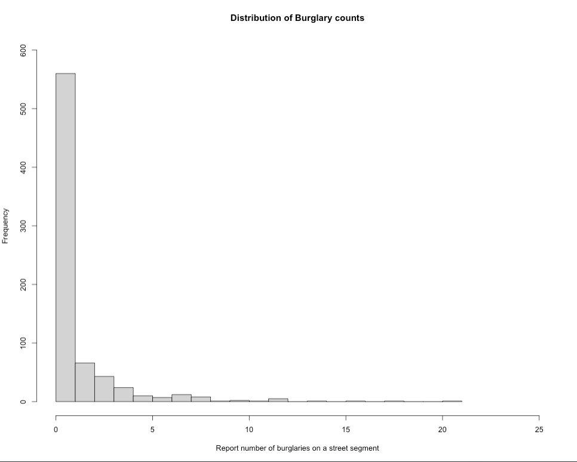

4 Bayesian Generalised Linear Models (GLMs)
4.1 Introduction
4.1.2 Learning outcomes
Today’s session aims to formally introduce you to Stan programming for Bayesian regression models. By the end of this session, you should be able to perform the following:
- Select the appropriate likelihood function specification for the Bayesian regression model i.e., normal, binomial or Poisson to model either continuous, binary, or count outcomes respectively;
- How to fully develop Stan code for such regression models with the appropriate prior (i.e., uninformative, weak or informative) specification for various parameters;
- How to interpret the various types of coefficients including Odds Ratios (OR) and Risk Ratios (RR);
- Computing exceedance probabilities;
- Model validation
You can follow the live walkthrough demonstration, and then use the practical sessions to try the practical tutorials yourself by following the instructions and trying out the tasks.
4.1.5 Datasets & setting up the work directory
Go to your folder CPD-course and create a sub folder called “Day 3”. Here, we will store all our R & Stan scripts as well as the dataset for this session. Set your work directory to Day 3’s folder.
For Windows, the code for setting the work directory will be:
For MAC, the code for setting the work directory will be:
The dataset for this practical:
Street Burglary Data in Nigeria.csv
The datasets for the task at the end of the practical:
London LSOA 2015 data.csvObesity and Fastfoods in MSOAs data.csv
Let us start with the crime data titled: Street Burglary Data in Nigeria.csv
Context about the dataset: Conventional analyses of crime, based on European research models, are often poorly suited to assessing the specific dimensions of criminality in Africa or elsewhere in the Global South. The data used in today’s practical is an anonymised resampled excerpt from the Development Frontiers in Crime, Livelihoods and Urban Poverty in Nigeria (FCLP) project that aimed to provide an alternative framework for understanding the specific drivers of criminality in a West African urban context. This research project used a mixed-methods approach for combining statistical modeling, geovisualisation and ethnography, and attempted to situate insecurity and crime against a broader backdrop of rapid urban growth, seasonal migration, youth unemployment and informality. The study typically provided researchers both in Nigeria and internationally a richer and more nuanced evidence base on the particular dynamics of crime from an African perspective resulting a number of publications: [1], [2] and [3].
We will reproduce some of the analysis using a Bayesian regression model.
4.2 Poisson Regression Modelling
We are going to fit a Poisson-type model on an outcome that contains discrete counts of households reporting to have been victims of burglary. These are counts of burglary events aggregated to street segments. Let us load the data into RStudio and call the object burglaryDataset.
# Set your own directory using setwd() function
# Load data into RStudio using read.csv(). The spreadsheet is stored in the object called 'burglaryData'
burglaryDataset <- read.csv("Street Burglary Data in Nigeria.csv")
names(burglaryDataset)4.2.1 Selecting the appropriate Poisson model
There are three different types of Poisson models:
- Standard Poisson regression
- Negative Binomial Poisson regression
- Zero-Inflated Poisson regression
The implementation of one of these models are highly dependent on how the frequency distribution of the count response variable are displayed. If it resembles a normal curve - then use the standard Poisson version. Otherwise, use the Negative Binomial Poisson regression if there is any evidence of over-dispersion. When there’s an inflation of zero counts in the dataset, you will have to use the Zero-Inflated model to account for this problem.

Let’s check the frequency distribution of the outcome variable Burglary which corresponds to the number of reported instances a property on a street was burgled. You can simply use a histogram to examine its distribution:
# see lowest count
min(burglaryDataset$burglary)
# see highest count
max(burglaryDataset$burglary)
# visual distribution
hist(burglaryDataset$burglary, breaks=20, xlim = c(0, 25), ylim = c(0, 600),
xlab = "Report number of burglaries on a street segment",
ylab = "Frequency",
main = "Distribution of Burglary counts")
The plot show evidence of over-dispersion. It indicates that a high number of streets in this city have less frequency of burglaries, while a few number of streets have reported excess number of burglaries. Here, we consider using a Negative Binomial Poisson regression model over the standard and zero-inflated versions (i.e., scenario 1 and 3).
Now, that we know the model type, let us estimate the over-dispersion parameter using the glm.nb() function.
# Fit negative binomial regression null model
nb_model <- glm.nb(burglary ~ 1, data = burglaryDataset)
# Extract theta
theta <- nb_model$theta
theta
[1] 0.3161472The estimated over-dispersion parameter is 0.3161472, which is small, this suggests that residential burglaries exhibits substantial over-dispersion. We will use this value in our Bayesian model when we code it in Stan.
Acknowledgements: Thanks to Fernando Rodriguez for pointing out that it is improper practice to fix the dispersion parameter in the model, and for advising that it is best practice to allow the model to estimate it instead. That part has been amended accordingly. Further thanks to Jacob Cohen for noting that the current approach to estimating the dispersion parameter should serve primarily as guidance only to help us understand the extent of dispersion in our data and inform the choice of a prior distribution accordingly.
4.2.2 Data preparation and set-up for Bayesian analysis in Stan
Let begin with a model that only contains independent variables that are continuous measures i.e., distance and connectivity. We can prepare the dataset into list() object:
stan_dataset_model1 <- list(N = nrow(burglaryDataset),
burg = burglaryDataset$burglary,
dist = burglaryDataset$distance,
conn = burglaryDataset$connectivity,
offset = log(burglaryDataset$totalhouses)
)Important Notes: The list object stan_dataset_model1 from RStudio is passed into the Stan.
N = nrow(burglaryDataset)we are extracting the number of observations present in the dataset. Note that this a smart way instead of hard coding the number. Note that here,Nis743, meaning there 743 street segments.burg = burglaryDataset$burglary: Here, we defined the outcome variable (i.e., counts of burglaries) asburg.dist = burglaryDataset$distance: Independent variable for distance.conn = burglaryDataset$connectivity: Independent variable for connectivity.off_set = log(burglaryDataset$totalhouses): Here, theoff_setis calculated from taking the log-transform of thetotalhouses, which is the denominators used for expressing the residential burglaries as a crime rate per capita.
Let’s create our Stan script for running a Negative Binomial Poisson regression within a Bayesian framework.
4.2.3 Creating a script to run a Negative Binomial Poisson regression in Stan
A typical Stan program for a regression consist of the following 5 blocks:
- Data
- Parameters
- Model
- Generated quantities
The Data, Parameters and Model block must be specified for the regression to work. But there will be additional block that we will need to transform the resultant parameters (i.e., coefficients) into relative risk (RR) inside the Generated quantities block.
Let’s start with the data block:
FIRST STEP: We specify the total number of observations N as an integer, as well as the information we defined in our list object stan_dataset_model1 to be passed to Stan. This information is specified in the data block:
data {
int<lower=0> N; // declare the overall number of data points to be passed into model
array[N] int<lower=0> burg; // define as an array and specify it as an integer for counts
vector[N] dist; // continuous variable
vector[N] conn; // continuous variable
vector[N] off_set; // offset variable for the denominators (total households on a stree segment)
}SECOND STEP: For the parameters block, here we will need to specify the name of the regression intercept alpha, which is baseline risk of residential burglaries, and the two coefficients i.e., beta[1] and beta[2] for our two independent variables dist and conn respectively. We will also create phi, a dispersion parameter, to mimic the behaviour of that shown in the histogram of Scenario 2 and the derived estimate of \(\theta\) = 0.3161472 (see section 4.2.1)
data {
int<lower=0> N; // declare the overall number of data points to be passed into model
array[N] int<lower=0> burg; // define as an array and specify it as an integer for counts
vector[N] dist; // continuous variable
vector[N] conn; // continuous variable
vector[N] off_set; // offset variable for the denominators (total households on a stree segment)
}
parameters {
real alpha;
real<lower=0> phi;
vector[2] beta;
}THIRD STEP: We build our likelihood function and specify the priors for each parameter under the model block. For all parameters - the priors have been centred around 0, meaning that broadly, these variables have no effect on residential burglaries, and if any, these effects may range from ±1SD (so in risk terms 0.36 to 2.71). The regression model is neg_binomial_2_log(formula, Overdispersion):
data {
int<lower=0> N; // declare the overall number of data points to be passed into model
array[N] int<lower=0> burg; // define as an array and specify it as an integer for counts
vector[N] dist; // continuous variable
vector[N] conn; // continuous variable
vector[N] off_set; // offset variable for the denominators (total households on a stree segment)
}
parameters {
real alpha;
real<lower=0> phi;
vector[2] beta;
}
model {
// prior specification for our parameters
alpha ~ normal(0, 1);
beta[1] ~ normal(0, 1);
beta[2] ~ normal(0, 1);
phi ~ beta(2, 5)
// likelihood function i.e., statistical model
for (i in 1:N) {
burg[i] ~ neg_binomial_2_log(alpha + beta[1]*dist[i] + beta[2]*conn[i] + offset[i], phi);
}
}LAST STEP: We instruct Stan to generated quantitites to calculate the relative risk ratio (RRs) by converting the estimated coefficients by using exp(). We ask it to calculate the log likelihood for model validation:
data {
int<lower=0> N; // declare the overall number of data points to be passed into model
array[N] int<lower=0> burg; // define as an array and specify it as an integer for counts
vector[N] dist; // continuous variable
vector[N] conn; // continuous variable
vector[N] off_set; // offset variable for the denominators (total households on a stree segment)
}
parameters {
real alpha;
real<lower=0> phi;
vector[2] beta;
}
model {
// prior specification for our parameters
alpha ~ normal(0, 1);
beta[1] ~ normal(0, 1);
beta[2] ~ normal(0, 1);
phi ~ beta(2, 5)
// likelihood function i.e., statistical model
for (i in 1:N) {
burg[i] ~ neg_binomial_2_log(alpha + beta[1]*dist[i] + beta[2]*conn[i] + off_set[i], phi);
}
}
generated quantities {
// report crime risk ratios
real baselineCrimeRR;
vector[2] CrimeRR;
baselineCrimeRR = exp(alpha);
CrimeRR = exp(beta);
// model validation and comparison
vector[N] log_lik;
for (i in 1:N) {
log_lik[i] = neg_binomial_2_log_lpmf(burg[i] | alpha + beta[1]*dist[i] + beta[2]*conn[i] + off_set[i], phi);
}
}Save the stan script as Cont_Model_1.stan.
4.2.4 Compiling our Stan code in RStudio and Results
Now, let us turn our attention to RStudio. Using the stan() to compile and obtain the posterior estimation of the overall risk and crime risk ratios (CRR) for the each independent variable:
# the directory needs to be set to where you saved the dataset and Stan script
crr.negbin.model1 = stan("Cont_Model_1.stan", data=stan_dataset_model1, iter=3000, chains=6, verbose = FALSE)We can print the results accordingly:
# reports all results
print(crr.negbin.model1, pars = c("alpha", "beta", "baselineCrimeRR", "CrimeRR"), probs = c(0.025, 0.975))Output summary table
Inference for Stan model: anon_model.
6 chains, each with iter=3000; warmup=1500; thin=1;
post-warmup draws per chain=1500, total post-warmup draws=9000.
mean se_mean sd 2.5% 97.5% n_eff Rhat
alpha -2.16 0 0.13 -2.42 -1.91 3282 1
beta[1] 0.00 0 0.00 0.00 0.00 4237 1
beta[2] 0.06 0 0.02 0.02 0.11 3216 1
baselineCrimeRR 0.12 0 0.02 0.09 0.15 3225 1
CrimeRR[1] 1.00 0 0.00 1.00 1.00 4236 1
CrimeRR[2] 1.07 0 0.02 1.02 1.11 3215 1
Samples were drawn using NUTS(diag_e) at Fri Jan 24 02:30:42 2025.
For each parameter, n_eff is a crude measure of effective sample size,
and Rhat is the potential scale reduction factor on split chains (at
convergence, Rhat=1).Here is the messing part - interpretation. Before anything, note that alpha, beta[1] and beta[2] corresponds to the intercept, and coefficients for distance and connectivity, respectively. These are on the log-scale!
The risk ratios from alpha, beta[1] and beta[2] which, in turn, corresponds to the intercept, and coefficients for distance and connectivity, respectively, are the baselineCrimeRR, CrimeRR[1] and CrimeRR[2]. For instance, the significant result is for connectivity, which shows for every unit increase in the number to street connections on a segment in the network, the risk of residential burglaries increase by 1.07 (7%), which is significant based on its 95% Credibility Interval (95 CrI: 1.02-1.11).
We can compute exceedance probabilities i.e., that such risk concerning connectivity are greater than 1 (meaning there’s an excess risk):
# Here, we can extract the simulated sample for CrimeRR[2]
conn_draws <- extract(crr.negbin.model1, 'CrimeRR[2]')[[1]]
mean(conn_draws > 1.00)
[1] 0.9977778This indicates a strong chance (99.7%) that streets with more connections to other street segments in the network will certainly increase the risk of residential burglaries.
Lastly, we will assess the validity of our model using a test called Leave-One-Out Cross-Validation. The estimate from this test Expected Log Predictive Density (ELPD) quantifies how well a model performs and so higher values of ELPD indicates better predictive performance. While, it can be interpreted on its own, its primary value lies in model comparison rather than as an absolute measure.
# extracting ELPD leave-one-out results from model with continuous variables only
log_lik_with_cont <- extract_log_lik(crr.negbin.model1, merge_chains = FALSE)
r_eff_with_cont <- relative_eff(log_lik_with_cont)
loo_cont <- loo(log_lik_with_cont, r_eff_with_cont, cores = 6)print(loo_cont)
Computed from 9000 by 743 log-likelihood matrix.
Estimate SE
elpd_loo -1022.1 37.7
p_loo 2.6 0.4
looic 2044.3 75.3
------
MCSE of elpd_loo is 0.0.
MCSE and ESS estimates assume independent draws (r_eff=1).
All Pareto k estimates are good (k < 0.7).
See help('pareto-k-diagnostic') for details.We take note that the ELPD is -1022.1
4.2.5 Model with categorical variables
The purpose of this section is to show:
- How to include categorical variables into the model
- Perform model comparisons
Let’s include the following categorical variables: integq and choiceq into the regression. Each variable has four categories, we want to omit the first category as it represents the lowest exposure group, and use it a reference for the higher categories when we estimate their risk.
# See table for categorical variables
table(burglaryDataset$choiceq)
table(burglaryDataset$integq)
# Create dummy variables for choice
burglaryDataset$choicecat2 <- ifelse(burglaryDataset$choiceq == 2, 1, 0)
burglaryDataset$choicecat3 <- ifelse(burglaryDataset$choiceq == 3, 1, 0)
burglaryDataset$choicecat4 <- ifelse(burglaryDataset$choiceq == 4, 1, 0)
# Create dummy variables for integration
burglaryDataset$integ2 <- ifelse(burglaryDataset$integq == 2, 1, 0)
burglaryDataset$integ3 <- ifelse(burglaryDataset$integq == 3, 1, 0)
burglaryDataset$integ4 <- ifelse(burglaryDataset$integq == 4, 1, 0)Let us expand the model to include independent variables that are both continuous and categorical measures i.e., distance and connectivity, choice and integration, and the new information into a list() object:
stan_dataset_model2 <- list(N = nrow(burglaryDataset),
burg = burglaryDataset$burglary,
dist = burglaryDataset$distance,
conn = burglaryDataset$connectivity,
chcat2 = burglaryDataset$choicecat2,
chcat3 = burglaryDataset$choicecat3,
chcat4 = burglaryDataset$choicecat4,
intcat2 = burglaryDataset$integ2,
intcat3 = burglaryDataset$integ3,
intcat4 = burglaryDataset$integ4,
off_set = log(burglaryDataset$totalhouses)
)The amended Stan code will look something as follows:
data {
int<lower=0> N; // declare the overall number of data points to be passed into model
array[N] int<lower=0> burg; // define as an array and specify it as an integer for counts
vector[N] dist; // continuous variable
vector[N] conn; // continuous variable
vector[N] chcat2;
vector[N] chcat3;
vector[N] chcat4;
vector[N] intcat2;
vector[N] intcat3;
vector[N] intcat4;
vector[N] off_set; // offset variable for the denominators (total households on a stree segment)
}
parameters {
real alpha;
real<lower=0> phi;
vector[2] beta;
vector[3] chcq;
vector[3] intq;
}
model {
// prior specification for our parameters
alpha ~ normal(0, 1);
beta ~ normal(0, 1);
chcq ~ normal(0, 1);
intq ~ normal(0, 1);
phi ~ beta(2, 5)
// likelihood function i.e., statistical model
for (i in 1:N) {
burg[i] ~ neg_binomial_2_log(alpha + beta[1]*dist[i] + beta[2]*conn[i] + chcq[1]*chcat2[i] + chcq[2]*chcat3[i] + chcq[3]*chcat4[i] + intq[1]*intcat2[i] + intq[2]*intcat3[i] + intq[3]*intcat4[i] + off_set[i], phi);
}
}
generated quantities {
// report crime risk ratios
real baselineCrimeRR;
vector[2] betaRR;
vector[3] chcqRR;
vector[3] intqRR;
baselineCrimeRR = exp(alpha);
betaRR = exp(beta);
chcqRR = exp(chcq);
intqRR = exp(intq);
// model validation and comparison
vector[N] log_lik;
for (i in 1:N) {
log_lik[i] = neg_binomial_2_log_lpmf(burg[i] | alpha + beta[1]*dist[i] + beta[2]*conn[i] + chcq[1]*chcat2[i] + chcq[2]*chcat3[i] + chcq[3]*chcat4[i] + intq[1]*intcat2[i] + intq[2]*intcat3[i] + intq[3]*intcat4[i] + off_set[i], phi);
}
}Please save the Stan script as Cat_Model_2.stan.
We can use the stan() to compile the updated code to obtain the posterior estimation accordingly:
# the directory needs to be set to where you saved the dataset and Stan script
crr.negbin.model2 = stan("Cat_Model_2.stan", data=stan_dataset_model2, iter=3000, chains=6, verbose = FALSE)We can print the results accordingly:
# reports all results
print(crr.negbin.model2, pars = c("baselineCrimeRR", "betaRR", "chcqRR", "intqRR"), probs = c(0.025, 0.975))Output summary table
Inference for Stan model: anon_model.
6 chains, each with iter=3000; warmup=1500; thin=1;
post-warmup draws per chain=1500, total post-warmup draws=9000.
mean se_mean sd 2.5% 97.5% n_eff Rhat
baselineCrimeRR 0.13 0 0.03 0.09 0.20 4190 1
betaRR[1] 1.00 0 0.00 1.00 1.00 11128 1
betaRR[2] 1.08 0 0.03 1.03 1.14 5524 1
chcqRR[1] 0.95 0 0.21 0.60 1.44 4692 1
chcqRR[2] 0.94 0 0.23 0.57 1.46 4593 1
chcqRR[3] 0.86 0 0.29 0.44 1.55 4266 1
intqRR[1] 0.94 0 0.20 0.61 1.39 5311 1
intqRR[2] 0.84 0 0.18 0.54 1.25 5119 1
intqRR[3] 0.81 0 0.19 0.49 1.24 5302 1
Samples were drawn using NUTS(diag_e) at Fri Jan 24 03:34:39 2025.
For each parameter, n_eff is a crude measure of effective sample size,
and Rhat is the potential scale reduction factor on split chains (at
convergence, Rhat=1).We can compare this model against the previous one to see which one highest ELPD value for better predictive performance.
# extracting ELPD leave-one-out results from model with both continuous and categorical variables
log_lik_with_cat <- extract_log_lik(crr.negbin.model2, merge_chains = FALSE)
r_eff_with_cat <- relative_eff(log_lik_with_cat)
loo_cat <- loo(log_lik_with_cat, r_eff_with_cat, cores = 6)print(loo_cat)
Computed from 9000 by 743 log-likelihood matrix.
Estimate SE
elpd_loo -1026.7 37.7
p_loo 7.7 1.0
looic 2053.4 75.4
------
MCSE of elpd_loo is 0.0.
MCSE and ESS estimates assume independent draws (r_eff=1).
All Pareto k estimates are good (k < 0.7).
See help('pareto-k-diagnostic') for details.This first model’s ELPD was -1022.1, and full model’s show -1026.7. Based on this result, it is clear that the first model is better in terms of predictive performance since its ELPD is higher (i.e., -1022.1 vs -1026.7). So its best to stick with the first model, unless there is a strong theoretical reason to use second model (i.e., accounting for confounding).
4.3 Tasks
4.3.1 Task 1 - Obesity and Fastfoods in London
Accessibility to junk food restaurants in young adolescents especially after school hours is a growing cause for concern. Especially, now that many young adults have a sedentary lifestyle; hence obesity rates among this population is increasing in the UK.
Try this problem in Stan: Use the dataset Obesity and Fastfoods in MSOAs data.csv to determine the links between prevalence of obesity in high school students and density of fast food (cheap) restaurant and deprivation in MSOAs in London. Implement a Bayesian GLM using Stan code.
Variable names:
SEQID: ID number for rowMSOA11CD: Unique identifier for MSOA areaMSOA11NM: Name of the MSOA areaOBESE: Number of child identified as obese in MSOA in LondonTOTAL: Total number of children surveyed for BMI measurementsIMDMSOA: Area-level socioeconomic deprivation score (higher scores means higher deprivation and vice versa)RESTCAT: Categorical variable for classifying an MSOA in terms of density of junk/cheap fast food outlets restaurants:1 = 1 to 10,2= 11 to 25,3= 26 to 50and4= 51 to 300.
HINT: You might want to consider using the following functions: binomial_logit() or binomial() in the model block and reporting the odd ratios using the generated quantities block. You might want to consider computing the exceedance probabilities for the odd ratios using the threshold of 1.
4.3.2 Task 2 - Factors affecting house prices in London (2015)
Try this problem in Stan: Use London LSOA 2015 data.csv data pertained house prices in 2015, and assess it’s relationship with public transport accessibility (PTA), average income and socioeconomic deprivation (IMD) as the independent variables. Implement a Bayesian GLM using Stan code.
Variables names:
LSOACODE: Unique identification code for the geographic areaAVEPRICE: (Dependent variable) Average house price estimated for the LSOA in 2015AVEINCOME: Estimated average annual income for households within an LSOA in 2015IMDSCORE: Deprivation score for an LSOA in 2015PTAINDEX: Measures levels of access/connectivity to public transport
HINT: You might want to consider using the following functions: normal() in the model block. You might want to consider computing the exceedance probabilities for the coefficients using the threshold of 0.